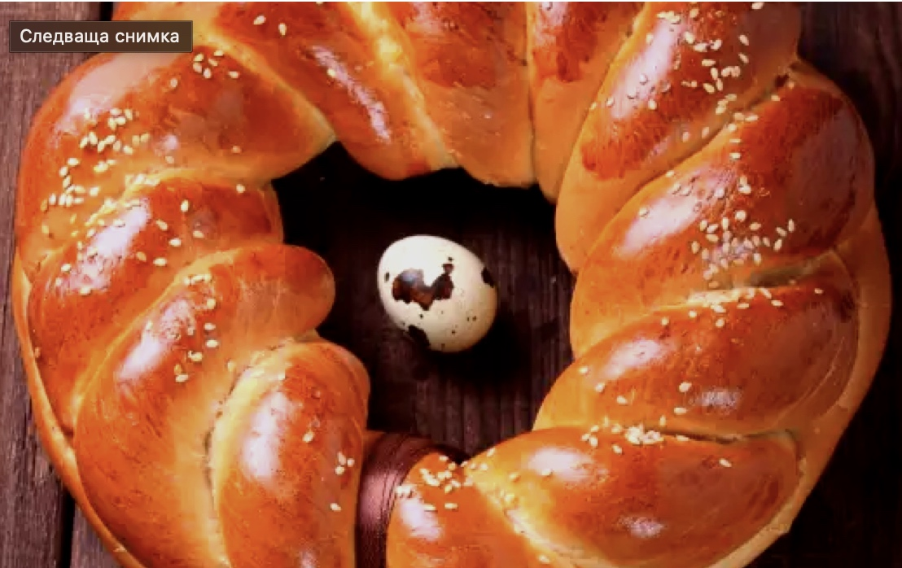

Kozunak
Copied from gotvach.bg

Необходими Продукти
- брашно - 1 кг бяло
- мая - 40 г
- захар - 350 г
- прясно мляко - 350 г
- мас - 150 г разтопена или олио
- яйца - 6 бр.
- лимони - настърганата кора и сок от 1 бр.
- коняк - 50 мл
За Намазване
- яйца - 1 разбито, за намазване
- захар - за поръсване
Начин на Приготвяне
- Маята се размива 8 малко хладко мляко, прибавят се 1 супена лъжица захар и малко брашно, за да се получи рядка кашица.
- Покрива се и се оставя на топло да втасва.
- Разбиват се яйцата с останалата захар, останалото мляко, маста или олиото, кората и сока от лимона и коняка.
- Брашното се пресява на купчинка, в средата на която се прави кладенче.
- Яйчната смес се изсипва в него и се замесва тесто. Меси се поне половин час.
- Поръсва се с брашно, покрива се с кърпа и се оставя да втасва на топло. Размесва се и се разстила в намазана с масло и поръсена с брашно тава.
- Козунакът се намазва с разбитото яйце и се поръсва с кристална захар.
- Пече се 45 минути в предварително загрята умерена фурна.
Конячният козунак е готов!